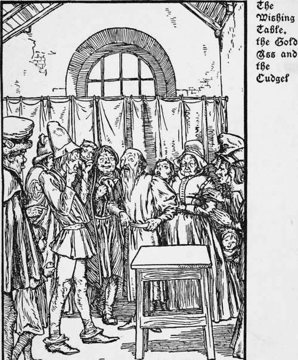

The Wishing Table The Gold Ass And The Cudgel. Part 2
Description
This section is from the book "Household Tales by Brothers Grimm", by Brothers Grimm. Also available from Amazon: Household Tales by Brothers Grimm.
The Wishing Table The Gold Ass And The Cudgel. Part 2
"I have enough now to last me as long as I live," thought the young man to himself, and accordingly he went about enjoying himself, not minding whether the inns he stayed at were good or bad, whether there was food to be had there or not. Sometimes it pleased him not to seek shelter within them at all, but to turn into a field or a wood, or wherever else he fancied. When there he put down his table, and said, " Serve up a meal," and he was at once supplied with everything he could desire in the way of food.
After he had been going about like this for some time, he bethought him that he should like to go home again His father's anger would by this time have passed away.
and now that he had the wishing-table with him, he was sure of a*ready welcome.
He happened, on his homeward way, to come one evening to an inn full of guests. They bid him welcome, and invited him to sit down with them and share their supper, otherwise, they added, he would have a difficulty in getting anything to eat.
But the joiner replied, " I will not take from you what little you have, I would rather that you should consent to be my guests," whereupon they all laughed, thinking he was only joking with them. He now put down his table in the middle of the room, and said, "Table, serve up a meal," and in a moment it was covered with a variety of food of better quality than any the host could have supplied, and a fragrant steam rose from the dishes and greeted the nostrils of the guests. "Now, friends, fall to," said the young man, and the guests, seeing that the invitation was well intended, did not wait to be asked twice, but drew up their chairs and began vigorously to ply their knives and forks. What astonished them most was the way in which, as soon as a dish was empty, another full one appeared in its place. Meanwhile the landlord was standing in the corner of the room looking on; he did not know what to think of it all, but said to himself, " I could make good use of a cook like that."
The joiner and his friends kept up their merriment late into the night, but at last they retired to rest, the young journeyman placing his table against the wall before going to bed.
The landlord, however, could not sleep for thinking of what he had seen; at last it occurred to him that up in his lumber-room he had an old table, which was just such another one to all appearance as the wishing table; so he crept away softly to fetch it, and put it against the wall in place of the other.
When the morning came, the joiner paid for his night's lodging, took up his table, and left, never suspecting that the one he was carrying was not his own.
He reached home at mid-day, and was greeted with joy by his father. "And now, dear son," said the old man " what trade have you learnt ?"
" I am a joiner, father."
"A capital business," responded the father, "and what have you brought home with you from your travels ?"
"The best thing I have brought with me, father, is that table."
The tailor carefully examined the table on all sides. "Well," he said at last, "you have certainly not brought a master-piece back with you; it is a wretched, badly-made old table."
" But it is a wishing-table," interrupted his son, " if I put it down and order a meal, it is at once covered with the best of food and wine. If you will only invite your relations and friends, they shall, for once in their lives, have a good meal, for no one ever leaves this table unsatisfied."
When the guests were all assembled, he put his table down as usual, and said, "Table, serve up a meal," but the table did not stir, and remained as empty as any ordinary table at such a command. Then the poor young man saw that his table had been changed, and he was covered with shame at having to stand there before them all like a liar. The guests made fun of him, and had to return home without bite or sup. The tailor took out his cloth and sat down once more to his tailoring, and the son started work again under a master-joiner.
The second son had apprenticed himself to a miller. When his term of apprenticeship had expired, the miller said to him, "As you have behaved so well, I will make you a present of an ass; it is a curious animal, it will neither draw a cart nor carry a sack."
" Of what use is he then ?" asked the young apprentice. "He gives gold," answered the miller, "if you stand him on a cloth, and say " Bricklebrit," gold pieces will fall from his mouth."
"That is a handsome present," said the young miller, and he thanked his master and departed.
After this, whenever he was in need of money, he had only to say "Bricklebrit," and a shower of gold pieces fell on the ground, and all he had to do was to pick them up. He ordered the best of everything wherever he went, in short, the dearer the better, for his purse was always full.
He had been going about the world like this for some time, when he began to think he should like to see his father again. When he sees my gold ass, he said to himself, he will forget his anger, and be glad to have me back.
It came to pass that he arrived one evening at the same inn in which his brother had had his table stolen from him. He was leading his-ass up to the door, when the landlord came out and offered to take the animal, but the young miller refused his help. " Do not trouble yourself," he said, " I will take my old Greycoat myself to the stable and fasten her up, as I like to know where she is."
The landlord was very much astonished at this; the man cannot be very well off, he thought, to look after his own ass. When the stranger, therefore, pulled two gold pieces out of his pocket, and ordered the best of everything that could be got in the market, the landlord opened his eyes, but he ran off with alacrity to do his bidding.
Continue to:
- prev: The Wishing Table The Gold Ass And The Cudgel
- Table of Contents
- next: The Wishing Table The Gold Ass And The Cudgel. Part 3
Tags
fairy tales, children's stories, brothers grimm, household tales